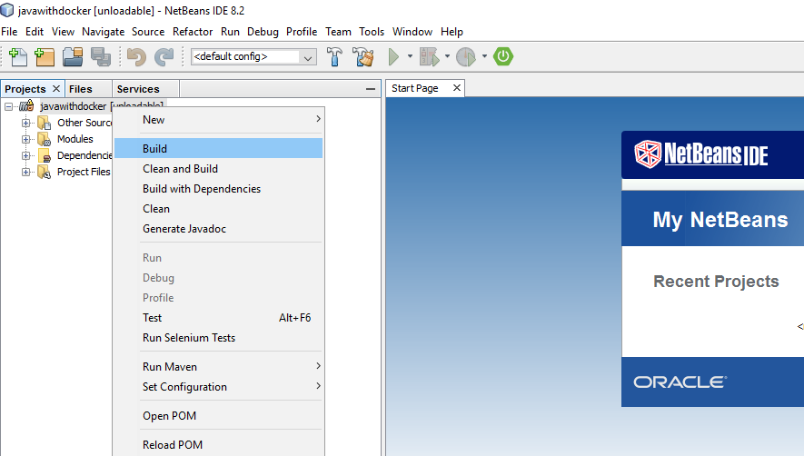
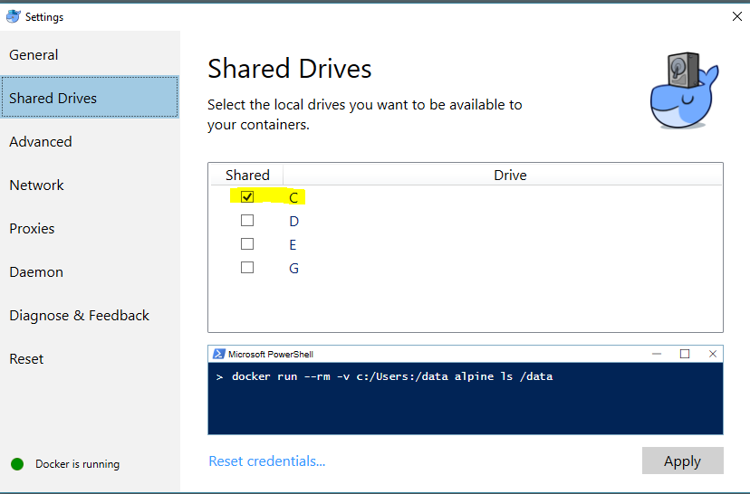
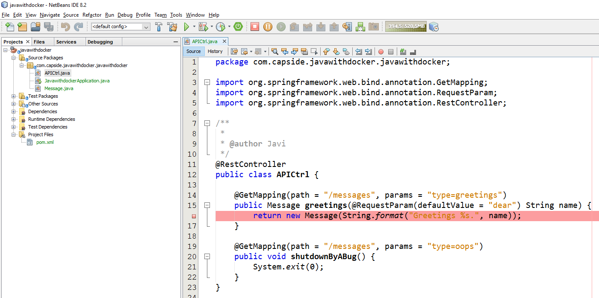
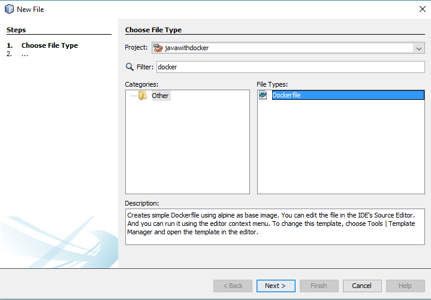

Si no estás familiarizado con Java y quieres terminar cuanto antes puedes descargar desde github el proyecto básico.
Visita http://start.spring.io/ y crea un nuevo proyecto con las referencias a web, actuator, lombok y devtools. Descarga y descomprime la carpeta correspondiente.
~/.m2 tienes el repositorio con la cache de Maven.

Message.java)package com.capside.javawithdocker.javawithdocker;
import lombok.AllArgsConstructor;
import lombok.Data;
/**
*
* @author Javi
*/
@AllArgsConstructor @Data
public class Message {
private String text;
}
APICtrl.java)package com.capside.javawithdocker.javawithdocker;
import org.springframework.web.bind.annotation.GetMapping;
import org.springframework.web.bind.annotation.RequestParam;
import org.springframework.web.bind.annotation.RestController;
/**
*
* @author Javi
*/
@RestController
public class APICtrl {
@GetMapping(path = "/messages", params = "type=greetings")
public Message greetings(@RequestParam(defaultValue = "dear") String name) {
return new Message(String.format("Greetings %s.", name));
}
@GetMapping(path = "/messages", params = "type=oops")
public void shutdownByABug() {
System.exit(1);
}
}
http://localhost:8080/messages?type=greetings&name=Alice y http://localhost:8080/messages?type=oops desde tu navegador.Ya tienes tu proyecto creado y funcionando. En otro workshop añadiremos tests unitarios y de integración pero ahora vamos a ver cómo podemos ejecutarlo dentro de un contenedor.

/tmp/javawithdocker, por ejemplo). Ejecuta un contenedor interactivo con soporte para Maven en el que puedas acceder al código:REM windows version
docker run -it --name java --rm ^
-v "%CD%":/app ^
-e "TERM=xterm-256color" ^
-w /app ^
maven:3-jdk-8 bash
# bash version
docker run -it --name java --rm \
-v "$PWD":/app \
-e "TERM=xterm-256color" \
maven:3-jdk-8 bash
root@xxx:/app# ls
root@xxx:/app# mvn package
root@xxx:/app# exit
REM windows version
docker run -it --name java --rm ^
-v "%CD%":/app ^
-v "%USERPROFILE%"/.m2:/root/.m2 ^
-e "TERM=xterm-256color" ^
-w /app ^
maven:3-jdk-8 bash
# bash version
docker run -it --name java --rm \
-v "$PWD":/app \
-v "$HOME"/.m2:/root/.m2 \
-e "TERM=xterm-256color" \
maven:3-jdk-8 bash
root@xxx:/app# mvn package
root@xxx:/app# exit
REM windows version
docker run -it --name java --rm ^
-v "%CD%":/app ^
-v "%USERPROFILE%"/.m2:/root/.m2 ^
-e "TERM=xterm-256color" ^
-w /app ^
--publish 8080:8080 ^
--publish 5005:5005 ^
maven:3-jdk-8 bash
# bash version
docker run -it --name java --rm \
-v "$PWD":/app \
-v "$HOME"/.m2:/root/.m2 \
-e "TERM=xterm-256color" \
--publish 8080:8080 \
--publish 5005:5005 \
maven:3-jdk-8 bash
java -Xdebug -Xrunjdwp:server=y,transport=dt_socket,address=5005,suspend=y -jar target/javawithdocker-0.0.1-SNAPSHOT.jar
127.0.0.1.

APICtrl.java:
http://localhost:8080/messages?type=greetings&name=Alice y utiliza las herramientas de depuración para comprobar el valor de la variable name.

APICtrl.java@GetMapping(path = "/messages", params = "type=goodbye")
public Message goodbye(@RequestParam(defaultValue = "dear") String name) {
return new Message(String.format("Have a nice day, %s.", name).toUpperCase());
}
Si no quieres pelearte con Netbeans o Java puedes bajar el proyecto actualizado desde github.
Crea un fichero .reloadtrigger en la raíz del proyecto. Modificar este fichero provocará la recarga del contexto de Spring.
Añade las siguientes líneas a application.properties para que Spring sepa que debe monitorizar dicho fichero
spring.devtools.restart.additional-paths=.
spring.devtools.restart.trigger-file=.reloadtrigger
spring-boot:run para ejecutar la aplicación en lugar de invocar directamente la jvm. Puedes comprobar cómo se utiliza -Drun.jvmArguments para especificar opciones de la jvm y -D directamente para indicar opciones de la aplicación. mvn spring-boot:run \
-Drun.jvmArguments="-Xdebug -Xrunjdwp:transport=dt_socket,server=y,address=5005,suspend=y" \
-Dserver.port=8080


APICtrl.java (por ejemplo añadiendo la operación con la que probamos antes). @GetMapping(path = "/messages", params = "type=goodbye")
public Message goodbye(@RequestParam(defaultValue = "dear") String name) {
return new Message(String.format("Have a nice day, %s.", name).toUpperCase());
}
Si revisas el output de consola verás que al guardar no sucede nada pero que sin embargo al generar cualquier cambio en .reloadtrigger el contexto se recarga completamente.
Invoca la nueva operación abriendo http://127.0.0.1:8080/messages?type=goodbye. En caso de que no se hayan aplicado los cambios que hemos hecho ejecuta un build.


DockerfileFROM java:8u111-jre-alpine
MAINTAINER Javi Moreno <javi.moreno@capside.com>
COPY target/*.jar /app.jar
EXPOSE 8080
ENTRYPOINT ["java", "-jar", "/app.jar"]
CMD [""]
Responde: ¿Por qué crees que no utilizamos la misma imagen base que en desarrollo? ¿Qué implicaciones tiene esto? ¿Cómo minimizarías los riesgos asociados?
Utiliza la línea de comando para construir la imagen (vigila el punto final, es fácil olvidarlo). Sustituye <repositorio> por el nombre de tu repositorio.
mvn clean package
docker build -t <repositorio>/javawithdocker .
docker login
docker push <repositorio>/javawithdocker
docker run -it -p 8080:8080 --name demo --rm <repositorio>/javawithdocker
FROM java:8u111-jre-alpine
MAINTAINER Javi Moreno <javi.moreno@capside.com>
COPY target/*.jar /app.jar
EXPOSE 8080
ENTRYPOINT ["java", "-jar", "/app.jar"]
HEALTHCHECK --start-period=60s --interval=20s --timeout=5s --retries=3 \
CMD wget -q -s http://127.0.0.1:8080/health || exit 1
CMD [""]
mvn clean package
docker build -t <repositorio>/ciberado .
docker run -d -p 8080:8080 --name demo --restart on-failure ciberado/javawithdocker
REM windows
docker ps
docker inspect --format="{{json .State.Health.Status}}" demo
# bash
docker ps
docker inspect --format='{{json .State.Health.Status}}' demo
Invoca el endpoint con System.exit para generar una salida anómala abriendo 127.0.0.1:8080/messages?type=oops con el navegador.
Comprueba que el contenedor se ha reiniciado automáticamente en apenas unos segundos
docker ps
docker rm --force demo
¡Enhorabuena! Ya eres capaz de integrar tu entorno de desarrollo preferido con Docker y de generar imágenes como artefactos a publicar. A partir de aquí deberías explorar: